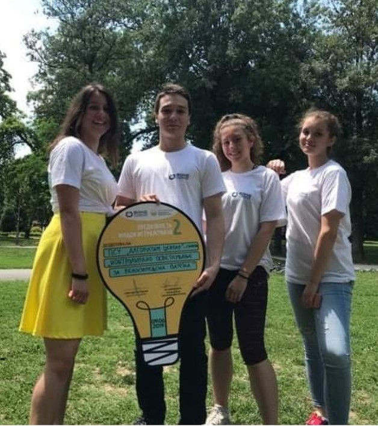

Во моментов со успех ги полагам испитите од прва година на Факултетот за информатички науки и компјутерско инженерство.
Средното образование го започнав првите две години во гимназија Алгоритам, а го завршив во гимназијата Орце Николов.
Бев запишан на насоката Природно математичка А и во сите четири години имав одличен успех со просек од 5.00.
Основно образование завршив во училиштето „Стив Наумов“ со успех од 5.00.
Во текот на моето школување земав учество во натпревари по математика и физика на кои што освојував бројни награди и признанија.
Во втора година средно учествував во изработка на проектот за млади истражувачи во тим со соученици од гимназија Алгоритам и го презентирав проектот
пред комисија од Фонд за иновации и технолошки развој од каде што добивме буџет за негово реализирање.
Ја сакам музиката, свирам гитара, пливањето ми е омилен спорт и сакам да играм шах.

Листа на освоени награди во текот на школувањето
| Година | Одд./Клас | Натпреварување | Освоено | Место |
|---|---|---|---|---|
| 2019 | II | Државен натпревар по физика | пофалница | п |
| 2018 | I | Државен натпревар по физика | награда | 3 |
| Регионален натпревар по математика | пофалница | п | ||
| Државен натпревар по математика | пофалница | п | ||
| 2017 | 9 | Регионален натпревар по физика | награда | 1 |
| Државен натпревар по физика | пофалница | п | ||
| 2016 | 8 | Регионален натпревар по математика | награда | 1 |
| Државен натпревар по математика | пофалница | п | ||
| Регионален натпревар по физика | награда | 3 | ||
| Државен натпревар по математика | пофалница | п | ||
| 2015 | 7 | Регионален натпревар по математика | награда | 2 |
| Државен натпревар по математика | награда | 3 | ||
| 2014 | 6 | Регионален натпревар по математика | награда | 3 |
| 2013 | 5 | Регионален натпревар по математика | награда | 2 |
| 2012 | 4 | Регионален натпревар по математика | награда | 1 |